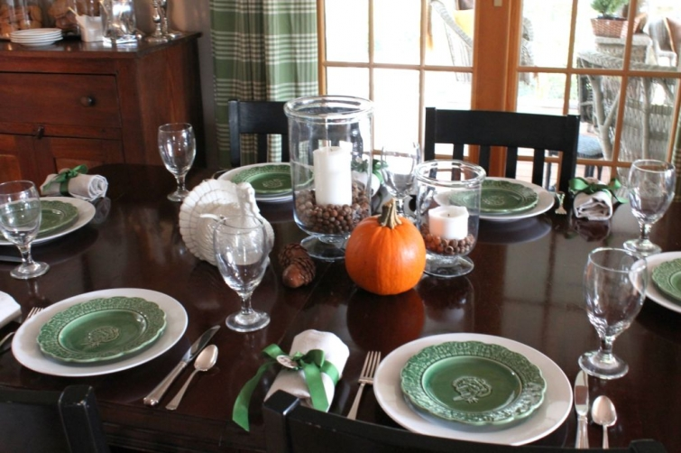
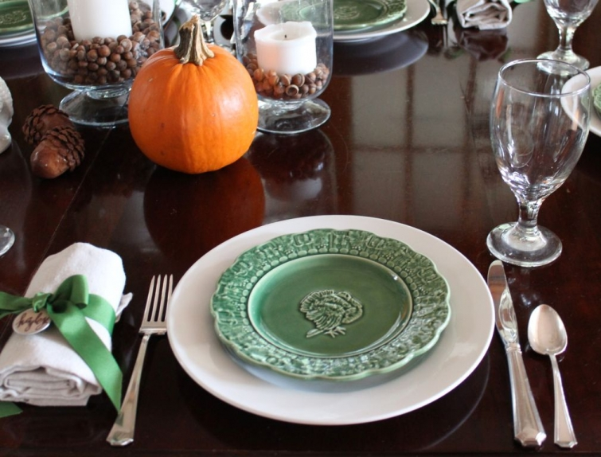

.png)
.PNG)
.PNG)
.PNG)
.PNG)
.PNG)
.JPG)
.JPG)
.PNG)
.PNG)


Last year’s Thanksgiving decor had cotton and brown dead stuff. This year I am using my mother’s green turkey plates along with acorns (brown dead stuff again. :)) So the table and kitchen are more colorful this year.
 The look is a little different from the typical Thanksgiving decor, but it works well with the green plaid drapes. Here is the buffet with its jars of cookies.

The green and brown cookbooks, along with a pumpkin and some “pinecone” acorns show up in the dining room cabinet.
Now let’s move from the dining area to the kitchen and look at the desk.
Here is a closer look at the chalkboard since you cannot see it all behind the desk organizer. Louvina wanted me to share our Thanksgiving menu. I hate to disappoint you, but this menu would be my ideal Thanksgiving dinner – starting with my sister’s pimiento cheese stuffed celery and ending with the caramel cake made by one of my husband’s relatives. It is not really what we will be having. You see, my husband’s side of the family has their family reunion on Thanksgiving at my in-laws’ home. It has anywhere from 50 to 80 people in attendance. Everyone brings a side dish or two, and it is a BIG feast – usually at lunch. My side of the family has their dinner at night, and there are a little less than 20 of us for that. And again, we all bring a side dish or two. So this girl here has never cooked a turkey! Imagine that.
While we are looking at chalkboards, I wanted to share with you the one I did for the magazine photo shoot. It had to be non-seasonal, so I thought cookies would be good no matter what the season, right?
Alright, let’s move on around the kitchen. We’ve got things to cook this week!
Here is a closer look at the cookbook area of the kitchen.
On the opposite side of the kitchen is the beverage area that you have seen several times before. The giant coffee urn holds my favorite hot holiday punch. It has such a wonderful smell! I will have the recipe for you on Friday.
And finally, here are sugar cookies and boxes for leftovers that I will take to my parents’ home for their Thanksgiving dinner. I found the gable boxes at Hobby Lobby. I did a little hand lettering on them and thought they would be perfect to hold zip lock bags of leftovers to take home.
That wraps up Thanksgiving in the kitchen. I have a bit more Thanksgiving decor from around here to show you on Wednesday. How are your Thanksgiving preparations going? I know sections of our country are getting blanketed with a strong winter storm, so if you have travel plans, I hope the weather does not impact you. We have rain headed our way and abnormally cold temperatures predicted for Thursday. I am headed out for errands in the morning before the rain gets here. Hope to see you back here soon!
until next time…


.PNG)
Just finally taking a break from holiday preparations and of course I was eager to see if you had posted. How do you find the time? I had to giggle a bit when I saw your table, as mine is similar to yours. I stumbled upon a large white ceramic turkey on clearance at JoAnn Fabrics 2 weeks ago and what a score at $8. Then I was able find some new linen color cloth napkins at Target on sale as well. I usually have two large cylinder candle holders all the time on our harvest table. I left those in the middle as well and just placed a few mini pumpkin gourds. Done. Those green plates are wonderful. Love all your other touches in the kitchen, especially the beverage area. Can’t wait for you to post your hot holiday punch recipe. Have a wonderful Thanksgiving with your family Kelly.
Oh I love the plates! You are incredible! Have a beautiful, grateful Thanksgiving!
We always have family over for Thanksgiving. Usually my side, but this year my husbands side. My husband usually smokes the turkey, which is out of this world. Unfortunately, it’s going to be too cold to smoke so I’m roasting it in the oven. Haven’t done that in years! Your house is lovely. I’m going to “borrow” some of your ideas. Happy Thanksgiving!
Hi Kelly,
Love your blog just started following it.
XO
Jena
Ha, Katrina! MY favorite thing was the leftover box. Well, and the chalkboard menu. Kelly, please make that a pinterest pin so I can save it for next year. Happy Thanksgiving!
Kelly, Your home looks amazing, as always. Love the green turkey plates and the pinecone/acorns! We are going to my step-son’s house this year and will get to spend the day with them and our newest grand daughter. I will be cooking but not the turkey. On my menu is homemade apple butter, yeast rolls and butter, green beans in cheese sauce, a cornbread casserole and a fresh cranberry salad. It’s making my mouth water just thinking about it 😉 Have a wonderful Holiday with your family!!
What a lovely table you set! I swear food tastes better when served in/on a beautiful setting. (or maybe that’s just me!)
As always, you home looks so cozy and inviting. Happy Thanksgiving to you and yours!
Your Thanksgiving table and kitchen are charming!! I love the leftover containers and your wonderful lettering on those and your chalkboards……such a nice touch! Happy Thanksgiving!
Love the green plaid, my favorite color. Only a blogger would decorate for Thanksgiving when they wouldn’t even be home.
We will be at my sister-in law’s for dinner, and I am bringing the pies. It will be in the 30’s here, but sunny. Hope everyone has a fantastic day!
Kelly,
I LOVE, love, love all of the green! Where did you find/get the pinecone acorns? I adore pinecones and acorns! Thanks for sharing all of the details and photos with us. I wish you and your family a blessed and healthy Thanksgiving!
I LOVE the green you did…so pretty and you (always) decorate your home that it makes it so inviting. I hope you and your family have a lovely Thanksgiving.
Kelly,
I love the simplicity of your Thanksgiving table. Green and brown is such an inviting color combination to me. I cannot believe you’ve never cooked a turkey. 😀
We’re going to our son’s house, his new wife is preparing a feast, with some help from the parents. I confess, I’m planning to decorate for Christmas this weekend since we won’t be entertaining guests.
Enjoy your holiday and stay warm, my friend.
Karen
Thank you Kelly for the sweet email. I wish we could have coffee!
I was so happy to read your menu this morning. I’ve never heard of anyone else enjoying pimento cheese stuffed celery. It was my Mom made my Dad every Thanksgiving. This year he will not be with us as he fell in March and is in nursing care now. He’s doing well but we will miss him.
I will try the caramel cake. Sounds wonderful. Have a blessed Thanksgiving and I hope all your children get to come home.
Love, love, the green dishes….the entire tablescape is beautiful. And as usual, I love everything I see. We have the whole week off from school here as well and I also was sooo glad to finish last week. Whew! Happy Turkey Day to you and yours.
I just don’t know where to begin!! Your Mother’s green turkey plates are PERFECT with your drapes; love your white ceramic turkey; love your white cabinets and wood counter tops; love the plate rack on the wall in the first picture – did you make it or is it an antique? Your home looks so warm and inviting! Hope you and your’s have a very Happy Thanksgiving!
Love your house. Love your website. I think you are a genius. It is brilliant the way your furniture and accessories easily move from room to room and look like they belong in their new place. Additionally, how you are able to switch out your curtains, plates, cookbooks and have a whole new look! I bet you save a lot of money , feelings of aggravation, and time. Thanks to Stephen Saint-Onge, I found your blog. Happy days! Decorate? Me? Nope. I’ve always known I wanted something stylish, slightly elegant, but mostly casual, that was easy to do and costs little (decorating for holidays and overall). I couldn’t find something that fit all of my criteria until I found you and your website. I feel like I’ve died and gone to heaven. Thank you, thank you, thank you. Happy Thanksgiving!
Beautiful as always. Love the green plates and window treatments. We were looking for window treatments the other day and I said to my husband “Kelly has something like this in her house and it looks great” to which my husband asked “who’s Kelly?”. I then explained your blog and your beautiful home. Have a Happy Thanksgiving!
Great job with the Thanksgiving decor…love it!
Love the turkey plates, their green against the white, so pretty. My, you’ve been busy and looks like things won’t be letting up anytime soon. Enjoy the holiday weekend (amid your busy-ness). I’m doing desserts and a dip and have, also, managed to elude cooking the turkey since I’ve been married. Phew! We have a big high school game on Thursday – it’s one of the oldest rivalries in Rhode Island, and it’s my husband’s first one as the Athletic Director, kind of exciting. Then, it’s off to the Cape to the cousins for a terrific dinner. Happy Thanksgiving to you and your family, Kelly
Kelly, I love those turkey plates — and your drapes!!! Love the color. Can I ask where you found them? I’ve been looking for new drapes for our living room, and can’t seem to find something that I like… Happy Thanksgiving to you! ~Sally
Happy Thanksgiving to you and your family Kelly. Your home looks so inviting and comfortable. That’s how a home should be and you have certainly hit the mark. I love your hurricane candle holder centerpiece. I had one until recently that I loved but while I was washing it in the sink, I accidentally cracked it against the stainless steel:-( I had bought it at Pier One several years ago and went back but they didn’t have the same design. Any ideas on where I might be able to get one? In the meantime, have a very blessed Thanksgiving and one of the things I’m grateful for is finding your blog this year. It has been such
a great joy to me!
So pretty, Kelly! I love the green turkey plates….very refreshing and different for Thanksgiving. Is that a rosemary topiary in your kitchen? I saw some the other day and considered buying one but figured I would probably kill it. :-/ Happy Thanksgiving! You and your blog have been a blessing to me this year.
With all you are accomplishing, I thought you must have a break from school this week:) We homeschool and I always take a full week at Thanksgiving ( and two full weeks at Christmas this year!;)Everything looks so inviting, as usual. I am copying your silverware/give thanks card setting from last year for our tables this year. I will, of course, give you credit:) Happy Thanksgiving, Kelly!
Too much to love here! I’m a green lover so all the green is very happy to look at! The chalkboard is wonderful as usual. Yesterday did the big shopping trip and today making pie crust on the to do list. Can’t believe it’s here already. Thankful for your friendship through your blog, Kelly!
Kelly….your home is so pretty, whatever you do, I love it !!!! The green is lovely……Wishing you and your family a very Happy Thanksgiving !!!
Your home is just beautiful and I love the use of green!
As usual, I LOVE it all. Do you write the lists and recipes on your chalkboards. WOW! I love your font. Details, please! Happy Turkey Week! xo
Wow! Kelly, everything looks picture perfect and absolutely gorgeous…as always! I love the green plaid drapes and the turkey plates. Happy Thanksgiving! 🙂
Your mom’s turkey plates go really well with your drapes! Everything looks lovely….really like those takeout boxes….great idea! Happy Thankshiving! 😉
I so love seeing your kitchen in all seasons…and your table is stunning…and I must say that I love your “leftover boxes”….Happy Thanksgiving Kelly!
The green curtains and plates are so pretty! Here’s to a 5 day break from school! Have fun at all your get togethers. Your leftover containers with your special touches are such a great idea.
———————————————————————–
Amen! I needed some time off to get caught up around here. I hope you are enjoying this time before Thanksgiving. The holiday rush will be here all too soon. Glad you liked all the green and the leftover boxes.
Kelly